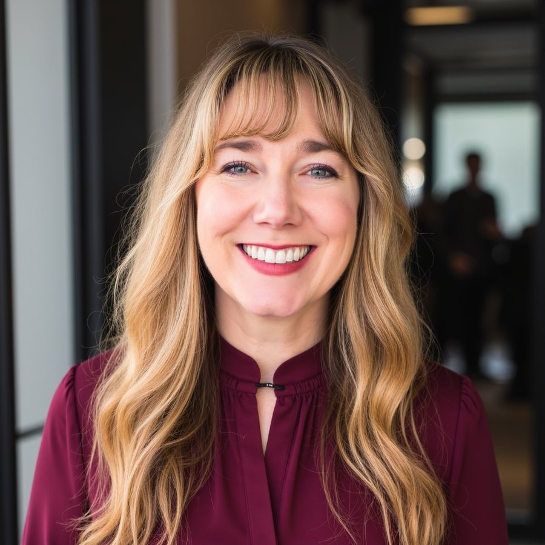

Hi, I'm Charisma Starr.
Neurodiversity coach and speaker with 25 years of experience in transformation. A fellow AuDHDer who understands what works and what doesn't when you're surviving in today's world.

In 2020, in a safe corporate workplace, I realized that what I had always called sensitivity was neurodivergence. High intelligence, emotional intelligence, and self-awareness had masked my AuDHD, while years of misdiagnosis, covert discrimination, and systems not designed for me had cut into my ability to thrive. As I unmasked, it became clear that the change most urgently needed was not personal, but societal.
In March 2024 I took a risk and came out publicly. I was one of the few openly autistic women in the legal field, and I've worked to bring mental health, emotional intelligence, mindfulness, and cross-neurotype collaboration into neurodiversity programming at organizations worldwide. I founded the Legal Neurodiversity Association to improve environments for neurodivergent people in the legal profession.
I started coaching informally in 2025, and in 2026 I became a certified mind-body-spirit coach through the Gaja Collective's 21-week program, which is accredited by the International Coaching Federation and approved by the National Board for Health & Wellness Coaching. I specialize in burnout prevention and neurodivergent-affirming coaching for Autistic and ADHD teens and adults. We work on purpose, intention, meaning, and the patterns that keep you stuck, always at a pace your nervous system can handle. I don't coach you toward masking better. I coach you toward a life that fits your brain.
I celebrated my 80th speaking engagement in 2026. My current focus is neurodiversity and AI, and how neurodivergent people can use AI as a translator and leveler. I speak on:
- Burnout prevention for everyone
- Emotional intelligence: closing the double empathy gap
- Neurodiversity and AI: AI as translator and leveler
- Neurodiversity in the legal profession
- Ethical governance of AI in legal practice
- Building Operational Models for Neurodiverse Teams
In my spare time I write, and I use Claude to build apps that help with my day-to-day life.
Is coaching right for you?
If you've spent your life feeling like the world's standard instructions don't quite apply to you, you're in the right place. I help neurodivergent teens and adults bridge the gap between where they are and where they want to be, with sustainable systems and radical self-acceptance.
Common experiences
- Chronic masking and performing, and the burnout that follows
- Intense emotional overwhelm or sensitivity
- Executive function struggles with planning, starting, and finishing
- Social anxiety and communication friction
- A feeling of wrongness in neurotypical spaces
Life situations I support
- School and academic navigation for teens
- College transitions and early career hurdles
- Workplace advocacy and authentic professional growth
- Relationship communication and sensory safety
- Sustainable self-care and home systems
Who I help
Neurodivergent people working through the friction of a world not always built for them. Early-diagnosed, late-identified, self-identified, or none of the above, you are welcome here.
Navigating transitions
Teens moving into adulthood. Adults in mid-life. The shift to retirement. Coaching through every transition so you can live well in the now.
Early career, college, and beyond
Executive functioning strategies that work with your brain, and ways to reduce cognitive load as AI changes the workplace.
Workplace burnout
For anyone worn down by chronic demands, pressure, sensory overload, or sensitivity. Learn regulation and balance strategies that bring you back to center.
Identity and discovery
Processing your neurodivergent identity with radical self-acceptance and compassion, while you find your purpose and set your intention.
Credentials and lived experience
In neurodivergent coaching, the bridge between formal evidence-based training and the lived understanding of sensory and executive friction is where true transformation happens.
Formal coaching training
Trained through an ICF-accredited, NBHWC-approved program with the Gaja Collective, where I earned my coaching certification. Focused on helping neurodivergent individuals establish purpose, intention, mental health, and wellness.
Legal Neurodiversity Association
President and Co-Founder of the Legal Neurodiversity Association. A professional association advancing inclusion, advocacy, and belonging for neurodivergent people across law.
Lived experience
Personal experience navigating high-pressure careers with a neurodivergent brain, providing deep empathy and practical advocacy tools. A compassionate light and support.